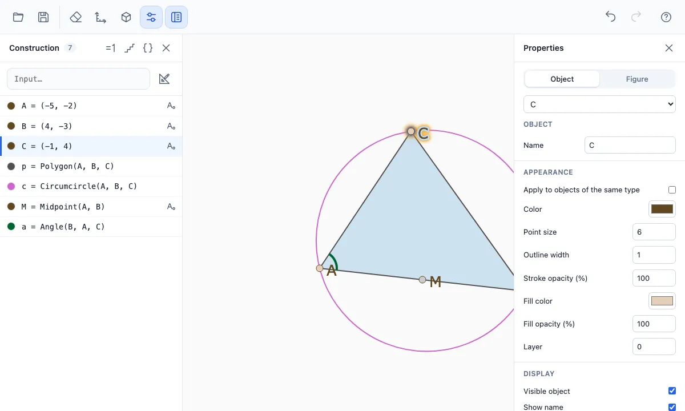
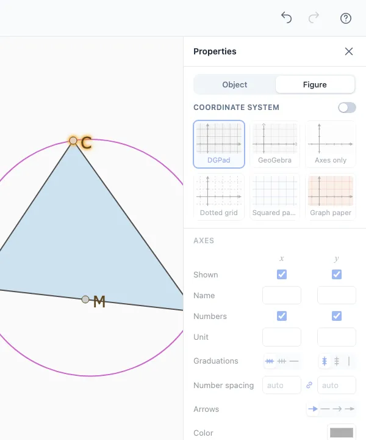

Properties and coordinate system

The panel
- Opened by or by of the context area; closed by its cross, the same button or Esc.
- Two tabs: Object and Figure.
- The object to set is chosen in the figure, by its line, or in the “Choose an object…” list (hidden objects included). A click in the figure selects instead of building; buttons and checkboxes are designated without being triggered. A menu tool or the input line build as usual, the created object showing in the panel.
- Changes are immediate and can be undone.
- Number fields: dragging horizontally sets the value (Shift: ten times finer), a click lets you type it. A drag counts as a single undo step.
- A ↺ button next to a color brings it back to the tool’s default.
The “Object” tab
| Section | Settings |
|---|---|
| Object | name; for an expression, definition |
| Appearance | apply to objects of the same type, color, point size, thickness, outline, stroke and fill opacities, fill color, dashes, layer (drawing order) |
| Display | visible object, show name, fixed object (polygon), text size, value decimal places (or do not display it) |
| Point | shape (circle, square, cross, diamond), name position in degrees, trace, horizontal and vertical step (moving by jumps) |
| Segment | marking (equal length ticks) |
| Angle | arc radius, right angle mark (open square, arc, square, dot, L) |
| Locus, list | number of points; segment thickness |
| Slider | step, length, vertical, knob color and size |
| Animation | speed (0: stop), reverse direction, at the end: repeat, back and forth or stop |
Several objects
On a multiple selection, only the settings shared by all are shown; a value that differs from one object to another is in gray italics. Ctrl-click, Shift-click or long press (figure or “Construction” panel) add or remove an object.
The “Figure” tab

A click on an axis opens this tab.
| Section | Settings |
|---|---|
| Coordinate system | shown or not; DGPad, GeoGebra, axes only, dotted grid, squared paper, graph paper presets (appearance only, neither zoom nor background) |
| Axes (x and y) | shown, name, numbers, unit (π: multiples of π/2), graduations, number spacing (empty: auto; 🔗 links x and y), arrows, color, size and bold numbers, DGPad or GeoGebra style, positive half-axes |
| Grid | shown or not, line spacing, subdivisions, color (that of the axes by default), thickness, solid, dotted or dashed line |
| Zoom and pan | axis fixed on screen, zoom around the origin |
| Figure | background; angles in degrees (default) or radians; segments above polygons |
In 3D
| Section | Settings |
|---|---|
| Axes | trihedron shown, color, thickness |
| Floor | shown, color (↺: blue above, brown below), opacity, size, spacing, line color and thickness |
| View | perspective |
These settings can be undone; zooming, moving and rotating the view cannot.